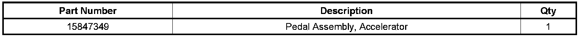
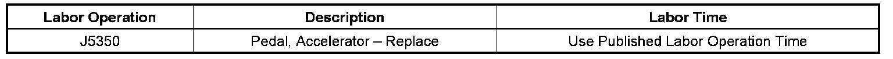

Engine Controls - MIL ON/Multiple DTC's/Low Power
TECHNICALBulletin No.: 08-06-04-012B
Date: August 06, 2008
Subject:
EI08047 - Intermittent MIL/SES, DTC(s) P2120, P2122, P2123, P2125, P2127, P2128, P2138 with Reduced Engine Power (Replace Accelerator Pedal)
Models:
2007 Cadillac Escalade, Escalade ESV
2007 Chevrolet Suburban, Tahoe
2007 GMC Yukon, Yukon Denali
Supercede:
This bulletin is being revised to provide a field fix. Please discard Corporate Bulletin Number 08-06-04-012A (Section 06 - Engine/Propulsion System).
Condition
Some customers may comment on an intermittent MIL/SES light illuminated with a message or an indicator that displays Reduced Engine Power.
Cause
This may be caused by corrosion at the accelerator pedal connector.
Correction
Technicians are to replace the accelerator pedal. Refer to SI for removing and replacing the accelerator pedal. Before reconnecting the connector, visually inspect the connector to verify that no corrosion is present.

Parts Information
Warranty Information

For vehicles repaired under warranty, use the table above.

Disclaimer